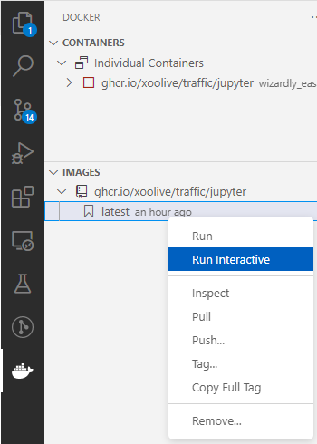
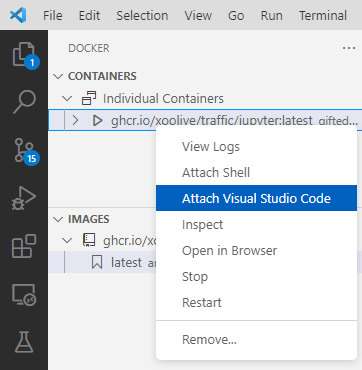

How to use traffic in a Docker container?
If you don’t want to be bothered with Python’s dependencies and just want to work, using a Docker container might be an easy solution. It is quite simple to run the traffic library with everything it needs in a Docker container, and you have a few options. We provide a self-contained container image on GitHub that you can use. It has everything in it that you need. Or, alternatively, you can build your own image. We describe both below.
Use the GitHub container image
Using the container image from GitHub is simple. Just make sure you have Docker installed and running, then pull the image with:
docker pull ghcr.io/xoolive/traffic/jupyter:latest
Once the image is downloaded, you can run it with
docker run -it -p 8888:8888 ghcr.io/xoolive/traffic/jupyter
This will start the container, and you can connect to it with the browser and work in a Jupyter notebook. Just copy-paste the URL that starts with http://127.0.0.1:8888… into your favourite browser and have fun.
Use the GitHub container image with Visual Studio Code
If you use VS Code, life is even more convenient. You just need to make sure that you have the Docker and Remote - Containers extensions installed.
For example, you have some code that you’d like to run in the container. You can pull the image from GitHub as above. Once that is done, open the Docker extension and right-click on the image and select Run Interactive.
This will show give you the URL that you can use on the console similar to the example above. The much cooler thing is, if you have the container running (as you now do if you followed the instructions) you can change VS Code to be running as if it was in the container. For that, you can right-click on the container and select Attach Visual Studio Code.
A new instance will be started, and you can use all the features of VS Code (including Jupyter notebooks) the same way you used to.
Create your own Dockerfile
In case you feel a bit more adventurous, you can also create your own Dockerfile and use it for your container. The following two examples show how you can use the traffic library in a Docker with Jupyter notebook. If you are completely unfamiliar with Docker and how to modify a Docker image, you can find a good tutorial in the official documentation. Of course, you can base your Docker container on a different Dockerfile as the one used in the examples.
In the simplest case when you just want to run the traffic library in a Docker
container, you can install the library and its dependencies directly into the
base environment of the container. In that case, the Dockerfile could look
like the following:
FROM jupyter/minimal-notebook
USER jovyan
RUN mamba install -c conda-forge traffic
# manually set environment variable for PROJ when running in base environment
ENV PROJ_LIB=/opt/conda/share/proj
Note the last line, which sets an environment variable for PROJ. This is needed
because the conda base environment never gets properly activated and this fixes
the issue described here.
To run this Docker, you first have to generate an image with docker build:
docker build -f jupyter.Dockerfile -t traffic/jupyter:latest .
The Docker container can now be started:
docker run -it -p 8888:8888 traffic/jupyter:latest
Run Jupyter in a custom environment
If you have already a working conda environment that you would like to use, you can install your existing environment into the Docker container.
The Dockerfile could look like the following:
FROM jupyter/minimal-notebook
# copy conda environment file to image
COPY traffic.yml traffic.yml
# install nb_conda into the base python to allow the user to choose the
# environment in the jupyter notebook and install environment
USER jovyan
RUN mamba install -y nb_conda
RUN mamba env create -f traffic.yml
Note that the environment file traffic.yml has to be in the same directory
as the Dockerfile: a sample version is provided in the docker folder.